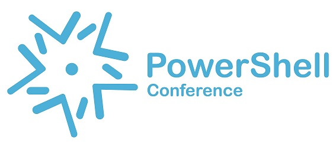

The PowerShell Conference Asia 2016
2 conference days and 1 day of pre-conference workshops on PowerShell and DevOps, delivered by speakers from around the world and less than 120 available seats.
When
21st - 22nd October (Pre-Conference Day 20th October)
Where
Singapore
Amazon Web Services
Registration Is Now Open
For three days,
PowerShell experts deliver some great content.

Join us for the second PowerShell Conference Asia, held in Singapore, where PowerShell speakers from Asia and around the world come together to bring attendees in-depth PowerShell and DevOps content.
Speakers include 4 members of the PowerShell team from Microsoft headquarters in Redmond and a strong line-up of MVPs, well-known international speakers, and community contributors. They'll cover in-depth topics on the PowerShell language and how you can use PowerShell to automate the technologies you use every day.
There will be strong focus on using PowerShell to enable DevOps practices whether On Premises or in the cloud.
The main event runs on Friday and Saturday, but we also have a pre-conference day on Thursday, where we will have some vendor-led workshops where you will have the opporunity to be introduced to and get hands on with tools and technologies in the DevOps and Automation space. If that's not your thing, we have a 1 day PowerShell refresher crash course led by one of the best PowerShell trainers from the United States. This is geared up to make sure you get the most from being a conference attendee.
At the end of Day 1 (Friday), we have drinks and nibbles at a local bar where you can connect with peers and the speakers in a more relaxed setting. All included in your ticket price. Remember, we still have another full day of content on Saturday though!
This event is made possible by our generous sponsors; SAPIEN Technologies, Inc., Microsoft and Amazon AWS. We rely on sponsorship and the support of the community through ticket sales to make this event happen and appreciate the support.
Please register for the mailing list using the link on this page to be added into our community Slack channel, click the Register link to buy your tickets.
We look forward to welcoming you to the event!
Learn From the Experts
If you are getting started with Windows PowerShell, this conference jump starts your learning. For three full days, you have access to some of the best people in the PowerShell community.
Network with others
We will have over 100 PowerShell enthusiats from different countries and with different skill sets. Come and network! Your next great career opportunity might just be waiting for you!
Make Ideas Happen
You have ideas that can change the way we manage IT systems with PowerShell? This conference is the place. Let us bring those ideas to life!
The Organizers
The faces behind PowerShell Asia Conference 2016
Mouse-over the images for organizer names

Benjamin Hodge
Organizer
Benjamin Hodge has built and managed innovative technical teams across multiple regions for some of the world’s best Security and Network Start-ups.
Matthew Hitchcock
Microsoft Singapore
Matt is a Former PowerShell MVP and is a driving force behind the PowerShell Asia Conference
Milton Goh
Microsoft MVP
Milton is the industry hybrid guy who loves getting involve with hybrid stuffs. He started off as a Software Developer in Visual Basic programming in his career.

Ravikanth Chaganti
CDM & Azure MVP at Dell
Working with cloud computing, automation, and various things in technology. Focus on architectures based on Microsoft and VMware technologies.
Ryan Yates
UK - CDM MVP at Re-Digitise
As the UK PowerShell User Groups co-ordinator Ryan works with the technologies and communities focused on PowerShell, SQL, SharePoint, Azure along with Agile, Lean & DevOps practices
Sebastian Szumigalski
Senior System Engineer in Japanese Bank
With passion for automation and new Technology’s. Helping to drive PowerShell community in Asia.
The PowerShell Team
We have some members of the PowerShell Team joining us this year.
Kenneth Hansen
Lead Principal Program Manager for PowerShell, Microsoft
Kenneth is the Lead Principal Program Manager for PowerShell and has enjoyed working on the PowerShell team for the past 14 years. Prior to PowerShell, at Microsoft, Kenneth has also worked on IP Telephony, BackOffice, Exchange Apps, and Provisioning. Prior to Microsoft, Kenneth led software development for MasPar, a manufacturer of Massively Parallel Computers and even earlier worked in various startup tool and compiler teams.
Angel Calvo
Partner Group Software Engineering Manager, Windows PowerShell, Microsoft
Angel Calvo (twitter: @angelcalvos) is the Partner Group Software Engineering Manager for Microsoft PowerShell and Desired State Configuration (DSC) products. Angel is also the Community Product Lead for the PowerShell Open Source GitHub Project.
In his current role, Angel Calvo is responsible to drive the technology strategy, and leads the software engineering team responsible for delivering: PowerShell and DSC on Linux and Windows, Windows Group Policy, Windows Remote Management Protocol (WinRM), OpenSSH for Windows and the overall Platform that enables IT Professionals, DevOps and Hosters to automate and manage: Windows Server, Operations Management Suite (OMS), Hybrid Clouds and Data Center infrastructure.
Angel is native from Madrid, Spain. Angel went to school to the University of Toledo, Spain, and outside work Angel’s other passions are Scuba Diving, Photographic and Playing Guitar.
Jason Shirk
Principal Software Engineer at Microsoft
Jason (twitter, github: @lzybkr) has worked on the PowerShell engine starting with V2 through today, skipping V4 to work on Xbox One. Before PowerShell, Jason worked on VC++ for 10 years and at Intel on their C++ and Fortran compilers for 3 years.
Hemant Mahawar
Microsoft
Hemant Mahawar is a Principal Program Manager on PowerShell team. Over the past 10 years, Hemant has been responsible for various PowerShell features across its multiple releases.
Most recently, Hemant was focused on various PowerShell Desired State Configuration (DSC) features. Prior to working on DSC, in PowerShell 3.0, Hemant helped design and implement PowerShell Workflows that integrates PowerShell with Windows Workflow Foundation. Earlier during PowerShell 2.0, Hemant was responsible for PowerShell's remoting capability that allows easy remote management as well as was responsible for PowerShell's rich API surface.
Hemant joined Microsoft in 2006 as a Program Manager on the PowerShell team. Hemant holds a Master's and Doctorate degree in Computer Science from the Texas A&M University as well as a Bachelor’s in Electrical Engineering from the Indian Institute of Technology. Outside work Hemant’s passions are Cricket and Biking.
The Speakers
In-depth technical sessions from PowerShell experts
Mouse-over the images for speaker names
June Blender
USA - Technology Evangelist & PowerShell MVP at SAPIEN Technologies
June is a Technology evangelist for SAPIEN. Formerly a Senior Programing Writer at Microsoft and member of PowerShell product team
Jaap Brasser
Netherlands - CDM MVP
As a consultant Jaap assists clients by creating infrastructure designs, performing migrations and building computer platforms primarily Microsoft.
Ravikanth Chaganti
CDM & Azure MVP at Dell
Working with cloud computing, automation, and various things in technology. Focus on architectures based on Microsoft and VMware technologies.
Jason Yoder
USA - Microsoft MCT
Jason is a Microsoft Certified Trainer, and a SAPIEN PowerShell MVP. Jason holds a Bachelor of Science in Computer Science degree as well as Microsoft certifications on all operating systems from Windows NT 4 to Windows Server 2012.
Ryan Yates
UK - CDM MVP at Re-Digitise
As the UK PowerShell User Groups co-ordinator Ryan works with the technologies and communities focused on PowerShell, SQL, SharePoint, Azure along with Agile, Lean & DevOps practices
Matthew Hitchcock
Microsoft Singapore
Matt is a Former PowerShell MVP and is a driving force behind PowerShell Asia Conference
Janaka Rangama
LK - CDM MVP at VirtusaPolaris
Janaka is a Microsoft Certified Trainer, Azure Architect, Author & an OSS geek hailing from "The Pearl of the Indian Ocean", Sri Lanka
Stuart Preston
UK - Azure MVP at Pendrica
Stuart is co-founder of Pendrica, a consultancy in the UK leading the way with automation of the Azure platform using Chef. He is a Microsoft Azure MVP.

David Das Neves
Germany - Premier Field Engineer at Microsoft
Specializes in PowerShell and Client and DevOps
Rob Sewell
UK - DBA & PowerShell Consultant
SQL Server DBA with a passion for PowerShell, Azure, Automation, and SQL. He has volunteered and spoken at SQL community in UK and Europe.
Thom Schumacher
US
PowerShell Austin UG Leader, IT Pro with 25 years experience. PowerShell scripter and my job is automating developers code for production.
Deepak Dhami
Microsoft MVP
Microsoft MVP [PowerShell] with a zeal to understand and automate. Trying his hands on automating the daily tasks and getting wiser in the process ;)
Flynn Bundy
Netherlands
Flynn Bundy is an Automation Engineer for Coolblue Netherlands. He is passionate about helping developers achive their goals through agile processes and toolsets.
Jason Brown
DevOps Practioner at Domain.com.au
Jason heads up Windows Devops at Domain group in Sydney, and specialises in highly-automated, scalable web environments. He thinks PowerShell is pretty cool.
Ritesh Modi
Solutions Architect : Microsoft India
Azure and Infrastructure Architect. Core expertise is PowerShell, Orchestrator, DSC, Service management automation and Azure automation
Fabien Dibot
France CMD MVP
Infrastructure Architect, He loves everything about automation and shares his knowledge on his
Mathias Jessen
Netherlands
Working professionally as a Microsoft Systems Administrator with a focus on Active Directory and Security

Trevor Hess
Trevor is widely know as one of the hosts from the Arrested Devops Podcast and spends his time building .NET Applications on Azure
Paul Amazona
Banking Sector, Singapore
Developer - MOOC Enthusiast - Meetup Junkie - Tech Hobbyist - Maker – Musician. Loves to use PowerShell in unconventional ways
Brett Gray
Puppet Labs
Brett is the Principal Solutions and Services Engineer for Puppet in APAC and has a Master of Systems Engineering.
Peter Stanski
Amazon Web Services
Peter is a Senior AWS Solutions Architect Manager and over several years has helped customers unlock innovation at scale.
Conference Schedule
packed with high quality content, just for you.
DAY 0 - POWERSHELL WORKSHOPS
DevOps on AWS with PowerShell
Amazon Web Services Team

PowerShell is cross-platform and Open Source and Amazon are embracing it! Come and find out how you can automate your AWS management with PowerShell.
Tour of SAPIEN PowerShell Studio
June Blender
Learn features that professionals use:
-- Function Builder and Parameter Builder
-- Snippets (save, reuse, and share)
-- Format script
-- Run/Run in Console/Run Selection
-- Debugging, including conditional breakpoints
-- Build an exe for a PowerShell Script
-- Create a custom tools menu
-- Digital signatures (makecert)
-- Rewind/Create restore point
-- Script Analyzer
-- New module from functions
-- New module from help file
Create a PowerShell GUI Application
-- Write event handlers
-- Multi-form app (if time permits)
PowerShell For Beginners
Jason Yoder
So you have played with PowerShell. You may have even downloaded and modified some scripts. How about learning more about how PowerShell actually works? In this workshop, we will take your basic knowledge of PowerShell and clarify some confusing aspects. You will also work through the most common mistakes made while learning PowerShell so you do not waste time. This will allow you to modify scripts faster and learn PowerShell with more confidence. We will also show you how to justify the cost saving benefits of PowerShell to your employer and more. Microsoft Certified Trainer and SAPIEN Technologies PowerShell MVP Jason Yoder will guide you through these initial steps into learning. He will drive your creativity and empower your ingenuity with real world examples. There will be a lot of code examples to download and hands on activities for those in attendance. Bring a laptop to fully participate.
PowerShell For Beginners
Jason Yoder
So you have played with PowerShell. You may have even downloaded and modified some scripts. How about learning more about how PowerShell actually works? In this workshop, we will take your basic knowledge of PowerShell and clarify some confusing aspects. You will also work through the most common mistakes made while learning PowerShell so you do not waste time. This will allow you to modify scripts faster and learn PowerShell with more confidence. We will also show you how to justify the cost saving benefits of PowerShell to your employer and more. Microsoft Certified Trainer and SAPIEN Technologies PowerShell MVP Jason Yoder will guide you through these initial steps into learning. He will drive your creativity and empower your ingenuity with real world examples. There will be a lot of code examples to download and hands on activities for those in attendance. Bring a laptop to fully participate.
DAY 1 - CONFERENCE
PowerShell: Past, Present and Future
Kenneth Hansen & Angel Calvo
We’ll layout where we’ve come from, where we think PowerShell is today and broad directions for the next few years in PowerShell. We will also discuss how the current (and changing) Microsoft processes and recent open source announcement impacts the team and it’s interaction with the PowerShell community.
Break
Introducing AWS Tools for Windows PowerShell
Peter Stanski
In this session, Peter Stanski will cover how AWS are getting behind PowerShell with their AWS module.
Break
Journey Through the Ages of PowerShell Security
Hemant Mahawar & Jason Shirk
This session will showcase various security functionality present across different releases of PowerShell since V 1.0. We will also demonstrate various improvements in PowerShell 5 that it the most secure release of PowerShell so far and makes the jobs of defenders better than ever.
Lunch
Nano Server - The Future is Now
Flynn Bundy
Introduction (5 min) - A brief history of time (10 min) In this section I want to go through the history of Windows Server and where its come from in relation to where its heading. This will include some comparisons of the various stages Windows Server has gone through to end up with Nano Server. - Looking forward (5 min) In this section i want to talk about the use cases for Nano Server and how it will be adopted moving forward. - Running applications (10 min) In this section i will demo running a Python DJango Application i've created on a Nano Server from a Bootstrap process. This Demo will involving creating the Nano Image also and demoing the creation speed. - Configuration management (10 min) In this section i will show how we cna use DSC to apply configuration to two newly created nano servers. - package management (5 min) In this section i will show the package management features of Nano Server and how it relates to other Linux based operating systems and how they do package management. - questions (5 mins)
Break
Cross-platform testing with Chef and DSC on Azure
Stuart Preston
This session is a deep dive into how we can develop and test our ‘infrastructure-as-code’ on both Windows and Linux platforms using PowerShell DSC as well as open-source and cross-platform tooling from Chef. Over 25% of all compute resource running in Azure is now running Linux and many applications comprise both Linux and Windows Servers. I’ll show how Azure is an ideal place to inexpensively perform cross-platform verification testing by using Test Kitchen and Chef’s latest testing and compliance framework, InSpec.
Afternoon Tea Break
Getting started with Windows Server Containers
Flynn Bundy
Introduction (5 min) - what and why containers ? (5 min) An overview of what a Windows Server container is and why its important - Docker & docker hub (5 min) An explanition of Docker and Docker hub (registry) - Swarm, Compose & registry. (5 min) An explanation of Docker Swarm for clustering and Compose for orchestration - running applications (10 min) running a NodeJS web application in a Windows Server Container - DSC and window server containers (10 min) How we can use DSC for management of a Windows Server container Host - Github/DSC demo - questions (5 min)
Break
Day Closeup
Networking Event
All Organisers, Speakers, PowerShell Team & Attendees are invited!
Come and spend the evening with the Speakers and other Attendees and network with us all at a soon to be disclosed location. This is the opportunity to bring any questions that you may have and get to know the
PowerShell: Past, Present and Future
Kenneth Hansen & Angel Calvo
We’ll layout where we’ve come from, where we think PowerShell is today and broad directions for the next few years in PowerShell. We will also discuss how the current (and changing) Microsoft processes and recent open source announcement impacts the team and it’s interaction with the PowerShell community.
Break
Introducing AWS Tools for Windows PowerShell
Peter Stanski
In this session, Peter Stanski will cover how AWS are getting behind PowerShell with their AWS module.
Break
Journey Through the Ages of PowerShell Security
Hemant Mahawar & Jason Shirk
This session will showcase various security functionality present across different releases of PowerShell since V 1.0. We will also demonstrate various improvements in PowerShell 5 that it the most secure release of PowerShell so far and makes the jobs of defenders better than ever.
Lunch
Avoiding Version Chaos in a Multi-Version World
June Blender
Beginning in Windows PowerShell 5.0, you can install multiple versions of the same module on the same computer; even in the same directory. Open source and PowerShellGet have revolutionized the availability of modules and Windows PowerShell 5.0+ will be continuously updated with Windows. The result is a myriad of interlocking parts with far more potential for conflicts in name, version, and functionality. When you run a command, how do you guarantee that you're running the command that you intend, instead of a command with the same name in a different module or a different version of the same module? How do you manage conflicting requirements for versions of PowerShell and versions of modules? Are we fated for the old "DLL Hell?" In this talk, I'll present the problem, describe some mitigating strategies, warn about their limitations, and provide a roadmap for version sanity.
Break
Setting Up JEA Effectively
David Das Neves
JEA? It provides access. It delegates rights. It is secure. It audits and - it is easy. You will see why and how in this hands-on session.
Afternoon Tea Break
Managing Windows Docker Container with Desired State Configuration
Ritesh Modi
Containers are the new and popular binaries for deployment. The frenzy is huge and almost everybody is moving to container based deployment. Microsoft has also adopted Docker containers as first class citizen within its Windows Server 2016. Container based on Windows images can be managed by Desired State Configuration. In this demo heavy session, we will deploy an application on Docker container. After deploying we will go through the steps to manage both the environment and application configuration through Desired State Configuration.
Break
Building PowerShell GUI's with XAML
David Das Neves
GUIs in PowerShell with XAML and PSGUI! Hard? Nope. After an intro we will run deep into the rabbit hole with a bunch of great examples!
Day Closeup
Networking Event
All Organisers, Speakers, PowerShell Team & Attendees are invited!
Come and spend the evening with the Speakers and other Attendees and network with us all at a soon to be disclosed location. This is the opportunity to bring any questions that you may have and get to know the
PowerShell: Past, Present and Future
Kenneth Hansen & Angel Calvo
We’ll layout where we’ve come from, where we think PowerShell is today and broad directions for the next few years in PowerShell. We will also discuss how the current (and changing) Microsoft processes and recent open source announcement impacts the team and it’s interaction with the PowerShell community.
Break
introducting AWS Tools for Windows PowerShell
Peter Stanski
In this session, Peter Stanski will cover how AWS are getting behind PowerShell with their AWS module.
Break
Journey Through the Ages of PowerShell Security
Hemant Mahawar & Jason Shirk
This session will showcase various security functionality present across different releases of PowerShell since V 1.0. We will also demonstrate various improvements in PowerShell 5 that it the most secure release of PowerShell so far and makes the jobs of defenders better than ever.
Lunch
The Battle of the IDE's
Ryan Yates
"Back in the days of PowerShell v1 & v2 there were very few PowerShell IDE's that really helped us in developing out PowerShell Scripts. Now with PowerShell v5 there is a much larger and more mature level of choices for the IDE. In this session we will look at the benefits of the following IDE's PowerShell ISE, PowerShell ISE + ISE Steroids, SAPIEN PowerShell Studio, Visual Studio Code + PowerShell Extension, Visual Studio + PowerShell Tools and if your still using it Notepad ++. This Session will leave you in a better place to understand which IDE will be the best fit for you."
Break
Powershell Profile Prepares Perfect Production Purlieu
Rob Sewell
"A Purlieu is a place, an environment, a haunt. The 6 P's are usually Proper Prior Preparation Prevents Poor Performance. The Powershell profile is a powerful tool that can provide a perfect Powershell scripting environment. It runs on start up preparing your editor for the purposes and processes that you intend to produce. If you use Powershell you should be making use of your profile and in this beginners session I will show you how you can start making your Powershell environment work even better for you"
Afternoon Tea Break
ETS - The Magic underneath the Shell
Mathias Jessen
We’ll take a look at the Extended Type System - the adaptive abstraction layer that allows you to work with .NET, COM, WMI and XML in a consistent manner. Topics covered include: pstypenames, hidden membersets, the nature of PSObject, Add-Member, type providers and the formatting subsystem.
Break
Securing PowerShell to defeat malware
Jaap Brasser
"This is a demo-rich session on some best practices on securing PowerShell and highlights the steps that have been taken in PowerShell 5.0. During this presentation I will take you through the different options of securing PowerShell starting at the ExecutionPolicy, briefly touching on subjects such as JEA and credential management and all the way through to Language Modes. This session will include real-life scenarios of system penetration and active malware."
Day Closeup
Networking Event
All Organisers, Speakers, PowerShell Team & Attendees are invited!
Come and spend the evening with the Speakers and other Attendees and network with us all at a soon to be disclosed location. This is the opportunity to bring any questions that you may have and get to know the
DAY 2 - CONFERENCE
Pragmatic PowerShell
Hemant Mahawar & Jason Shirk
PowerShell always provides a way to get the job done. This session will highlights the features that make PowerShell a very flexible tool that glues together disparate systems. This demo-heavy session will highlight broad range of programming needs & styles that PowerShell supports.
Break
Start-Contribution: Make PowerShell Better
Hemant Mahawar & Jason Shirk
Join a world where engagement with PowerShell community is more frequent, transparent, and involved than ever before. Whether you’re a coder, a scripter, or an enthusiast, learn about various ways that you can get involved and contribute directly to PowerShell projects to improve PowerShell.
Break
Using AWS CloudFormation and PowerShell Desired State Configuration
Ravikanth Chaganti
This session provides an overview of using PowerShell DSC with Amazon Web Services CloudFormation and using DSC in both pull and push modes along with CloudFormation templates. The demo in this session uses a sample deployment and walks through the steps involved in using DSC configuration scripts with CloudFormation. As a part of this session, you will understand what is best done in CloudFormation templates and using DSC.
Lunch
Dev -> QA -> Production using PowerShell & Visual Studio Team Services
Thom Schumacher
In this session I'll present a method to move Dot net source code from source, compile it and deliver it to the Dev, QA, and Production systems. Each deployment will be enabled by standard PowerShell Scripts. The Powershell Scripts will:
Deliver files
Create a website
Create a virtual directory for the website
Sets the Authentication for the website
Transforms the configuration files for each environment
Tests to ensure the site is operational.

Break
Infrastructure Release Pipeline : Lessons Learned
Deepak Dhami
"Lessons learned while setting up a release pipeline for the CPS-Standard project. Hear it first hand from the experience of an ITPro. It starts from Source (Git) -> Build (Psake) -> Test (Pester & OVF) -> Release , the whole shebang !"
Afternoon Tea Break
Field Experience: Implementing the Microsoft Release Pipeline
Matt Hitchcock
Continuous Delivery and Continuous Integration requires a release pipeline. We increase our reliability of changes by automating through a pipeline. Most people with an interest in CI/CD and DevOps are aware of what this is but not really how to implement it. Last year, Microsoft released a whitepaper called "The Release Pipeline" which helped IT professionals understand what a Release Pipeline is but not really how to do it. In his day job, Matt has been working with a Customer to make the Release Pipeline a reality. This Engineering team at a major financial company have begun the journey from GUI operators to managing their platform "as-code". In this session we will talk about how we are doing this, how we approached the change culturally and technologically. We will share where we are currently at, the challenges we faced and enable you to benefit from our learnings as we begin transitioning to a DevOps culture.
Break
PowerShell and the Rest of things
Paul Amazona
Meeseeks are creatures created to serve a singular purpose for which they will go to any length to fulfil. After they serve their purpose, they expire and vanish into the air. Using Hubot, I am going to create a Slack bot named Mr. Meeseeks who will use PowerShell to fulfil his purpose...
Day Closeup
Pragmatic PowerShell
Hemant Mahawar & Jason Shirk
PowerShell always provides a way to get the job done. This session will highlights the features that make PowerShell a very flexible tool that glues together disparate systems. This demo-heavy session will highlight broad range of programming needs & styles that PowerShell supports.
Break
Continuously delivering PowerShell with PowerShell
Jason Brown
"So you've got your PowerShell code. Now you need to deploy it. This session will look at techniques for safely pushing your code out to potentially thousands of servers at once. The session will use Octopus Deploy but the techniques are transferable to many other deployment engines"
Break
Centralised PS Repo Server
David Das Neves
Your private and internal PowerShell Repository. Setting it up, working with it, and - the cool stuff. Efficiency taken hands-on.
Lunch
Putting Windows in your Kitchen
Trevor Hess
In "Adding Windows to Your Kitchen", Trevor "The Chef Prince" Hess from 10th Magnitude will discuss common practices and challenges in the process of converging Windows. You’ll learn how you can use your existing Chef knowledge to build out integrations so your Windows machines can have the same level of testing/coverage as your Linux machines!
Break
Package Management with WMF 5.0, Nano Server and Docker
Ritesh Modi
Package Management has started getting a lot of momentum with the release of WMF 5.0. It has now reached a level of maturity that enterprises have started adopting it. Linux world always had very rich package management tools and windows was missing their equivalent. With the release of WMF 5.0, Windows get Package Management as first class citizen for managing deployments on Windows operating system. In this demo heavy session, we will look into the various concepts that enables Package Management. We will deep dive into Package sources, repository, Nuget, chocolatey, finding and installing packages, upgrading and uninstalling packages and how the overall pieces comes together to provide a complete package management solution to administrators. Nano Servers provides extensions to package management and has its own set of commands for its management. Container also provides its own image management. We will look into all these activities through demos.
Afternoon Tea Break
Puppet: Configuration Management and DSC
Brett Grey
DSC is a brilliant tool to implement installation and configuration of features within Microsoft operating systems, but maintaining or changing these configurations is often difficult. Puppet Enterprise and DSC provide the platform to do this in a repeatable and consistent manner that provides a configuration management in a manner that is secure, repeatable and auditable.
Break
Azure Automation | Becoming a Smart Jedi
Janaka Rangama
Automation is the key to embracing work life balance for IT Professionals. Azure automation helps you to become smarter than the rest of your colleagues by automating creation, deployment, monitoring, and maintenance of Azure resources. This session is for lazy admins who want to become smart Jedi's in their organizations and we will focus on what's new in Azure Automation, automation scenarios for on-premises hybrid workloads, Azure automation DSC for configuration management of your Azure workloads.
Day Closeup
Pragmatic PowerShell
Hemant Mahawar & Jason Shirk
PowerShell always provides a way to get the job done. This session will highlights the features that make PowerShell a very flexible tool that glues together disparate systems. This demo-heavy session will highlight broad range of programming needs & styles that PowerShell supports.
Break
PowerShell Performance Optimization
Mathias Jessen
PowerShell is extremely forgiving and extensible, but these niceties come at a cost. We’ll explore these, and different strategies for boosting execution speed (and limiting memory footprint), by looking at algorithmic refactoring, types and language constructs to avoid, runspace management, and low-level API’s.
Break
101 Crash Guide to Windows 10 Internet of (Your) Things Core and PowerShell
Desmond Lee
You can deploy Windows PowerShell on hetereogeneous platforms from Windows desktop, server, mobile and now Linux-based systems. Did you know that with Windows 10 Internet of Things (IoT) Core, you can harness the same PowerShell skillset to manage and administer your IoT and connected devices? In this demo-driven session, you will walk away with the key knowledge to help you understand and embark on the exciting field of IoT.
Lunch
Creating better reports with PowerShell
Jaap Brasser
"Using a number of different methods and modules in order to generate different forms of HTML reporting that can improve the quality of your PowerShell scripts. Take your current scripts to the next level by leveraging PowerShell by combining HTML and CSS to improve the visuals of your scripts."
Break
Writing Professional Help for PowerShell Modules
June Blender
Comment-based help is a good start, but professional modules, including open-source projects and modules in PowerShell Gallery, require more professional help. In this talk, we'll cover the basic and advanced features of comment-based help and XML help, including naming and locating files, supporting online help and updatable help, supporting help in multiple languages, and common errors that can break help in different versions of PowerShell. Then, we'll focus on the most important -- and most frequently skipped -- element of module help: the About topic that makes your module stand out from the rest.
Afternoon Tea Break
Using my DBA Database to automate the install and upgrade scripts
Rob Sewell
"DBAs looking after large estates will have a number of default scripts that they wish to run across their estate. Whether it is fantastic community scripts such as Ola Hallengrens Maintenance Solution and Brent Ozars sp_Blitz or company specific security audit solutions or just your favourite Extended Event Sessions, keeping track of these and updating them can be time-comsuming and troublesome. In this session I will show you how I achieve this using my DBA Database and Powershell"
Break
PowerShell, SQL and PowerBi-Reducing your Context Switching
Rob Sewell
"""Could you just tell me……….?"" This may cost 10 seconds of time or it may take several hours but it will definitely stop the current task and impact its completion. A SQL DBA will be required to provide a myriad of information in many different ways to many different types of people, answering questions from technical teams, technology teams, other parts of the business as well as directors and external parties. In this session you will learn the why, what and how of automating the gathering, storing and displaying of information enabling self-service and reducing the interruptive calls on your time whilst ensuring that the data is correct and trustworthy. I will also show you how you can use this to enable consistency across your estate. This session will be of benefit to the ""Accidental DBAs"" as well as DBAs looking after large estates The majority of the session will concentrate on the way I use PowerShell to gather the information and store it. I will also show you how to enable self-service with na..."
Day Closeup
Pricing & Registration
With 120 available seats be sure to reserve your place by ordering your Conference Tickets early. Tickets can be purcahsed by following the below button
Sponsors & Partners
Want to be a sponsor? Want to understand the benefits? Get in contact with us!
Location and Venue
area full of great hotels and restaurants.
Spend two full days in the cosmopolitan city of Singapore. The area is full of great hotels, restaurants and places to visit.
Venue
Amazon Web Services - Singapore
10-01, 23 Church Street
Singapore 049481
GET-HERE : Travel Tips
If you’ve never been to Singapore, here's some information to help you plan your stay. Questions? Contact psconfasiatravel@singaporepowershell.org.